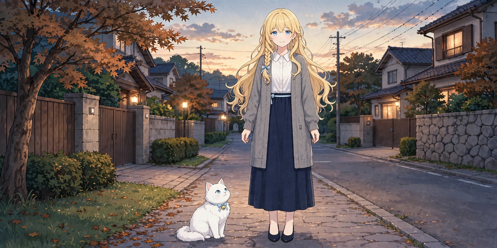

WOMEN — FASHION FEATURENo.4
巻き肩・猫背が気になる人の羽織りものの選び方（40代）
TEXT — 222工房（セラピスト／パーソナルトレーナー） GUIDE — セラフィナ＆ルミ

セラフィナ：先に結論です。巻き肩や猫背が気になる人は「お尻が隠れる丈」「前を開けて縦の線を作れる形」「肩まわりが厚すぎない生地」の3点で選ぶと、背中の丸みが目立ちにくくなります。この記事の商品は、この3点に合うものだけを先に並べます。
この記事の商品（先に比較）
| 商品 | 価格（税込） | お店 |
|---|---|---|
| カーディガン レディース Vネック ロング丈 体型カバー | 2,497円 | 体操服と学生服のCatch |
| カーディガン レディース Vネック レギュラー丈 きれいめ | 1,980円 | 体操服と学生服のCatch |
| カーディガン レディース 夏 ロング UVカット 冷房対策 | 2,330円 | YORINOA（ヨリノア） |
| カーディガン レディース ロング 体型カバー UVカット | 2,800円 | AUNI_BELLES |
| カーディガン 丈が選べる ロングカーディガン レディース | 4,500円 | HUG.U（ハグユー） |
| カーディガン レディース 薄手 洗える 長袖 羽織り | 1,690円 | 神戸レタス （KOBE LETTUCE） |
| フリンジ付きトッパーカーディガン | 9,980円 | Bee Bouquet （ビーブーケ） |
| コーデュロイテーラードジャケット | 4,042円 | ニコニコ生活 |
| スウェットライクVネックカーディガン | 4,193円 | URBAN RESEARCH ITEMS（Rakuten Fashion） |
| オーバーサイズニットカーディガン | 2,690円 | coca |
目安1：丈はお尻が隠れる長さ
短い丈の羽織りは、背中からお尻のラインをそのまま見せます。お尻が隠れるロング丈なら、丸みのある背中のラインも一緒にカバーできます。
目安2：前を開けて縦の線を作る
羽織りは前を開けて着ると、中央に縦のラインができます。Vネックのロングカーディガンは、その線が一番作りやすい形です。
目安3：肩まわりは厚すぎない生地
肩に厚みのある生地を重ねると、巻き肩が強調されます。薄手で落ち感のあるニットを選んでください。羽織る前に、肩を後ろへ回す動きを入れるだけでも見え方は変わります。
あえて推さないもの
- 背中に横の切り替えがある短い丈（丸みの位置で視線が止まります）
- 分厚い肩パッド入りのジャケット（巻き肩が強調されます）
- 前を全部留めて着る前提のタイトな羽織り（縦の線が作れません）
SHOPPING今回のアイテム
この記事の目安に合う商品
特徴：ロング丈のカーディガンを中心に、羽織りものを選びました。冷房対策やUV対策を兼ねるものも入っています。
PR：この記事のテーマに合う羽織りもの（PR）


スウェットライクVネックカーディガン
スウェット感覚の軽い羽織り。洗濯可・静電気防止（商品ページで確認）
4,193円（税込）
URBAN RESEARCH ITEMS（Rakuten Fashion）

あわせて読みたい：羽織りもの種類別ガイド／巻き肩・猫背のトレーニング
服で整えるのとあわせて、体そのものを整えるケアもあります。大阪・東三国の女性専用美容整体サロン「ステラポラリス東三国」の美容整体とは（専門解説）もあわせてどうぞ。
NEXT — 次に読むお腹の冷え対策｜腹巻きとあったかインナーの選び方（40代）